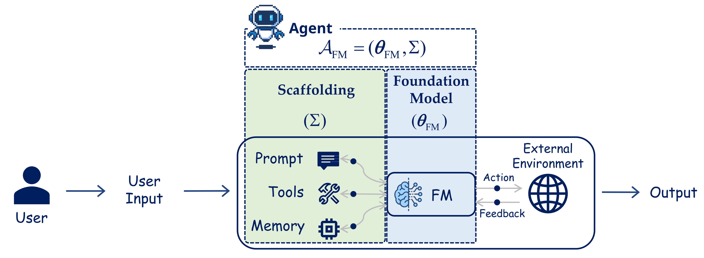

Survey Website
Self-Improvement in Foundation Model Based Agentic Systems
A survey website designed for fast understanding of the field: its taxonomy, representative papers, and the relationship between foundation model improvement and scaffolding improvement.
Abstract
Foundation models have greatly expanded the capability of agentic systems, but building agents that can improve themselves over time remains a central challenge. This survey organizes the area into two complementary axes: foundation model improvement, which updates the model itself, and scaffolding improvement, which updates prompts, memory, tools, and higher-level agent workflows. The website is structured so readers can quickly understand the field and directly jump to representative papers under each category.
Key Messages
Two major loops
The survey separates slow, parameter-level improvement from fast, scaffold-level improvement.
Taxonomy-first reading
Readers can understand the field by moving from category to category rather than reading linearly.
Paper list as the core asset
The website directly embeds selected papers instead of leaving the literature only in an external repository.
Built for fast scanning
A cleaner layout reduces visual noise and helps readers quickly locate representative work.
Taxonomy
The taxonomy is designed as a navigation map. Each item below links directly to the corresponding paper list.
1. Foundation Model Improvement
Improvement methods that update the foundation model itself.
2. Scaffolding Improvement
Improvement methods that keep the model fixed while evolving the agent scaffold.
Overview Figures
Keep only the most informative figures near the top of the page. Use them to support the taxonomy rather than dominate the browsing experience.


Browse Papers by Taxonomy
This section is the center of the website. Each subsection lists representative papers directly on the page. Replace placeholder entries with your finalized bibliography and keep the GitHub repository as the full, continuously updated list.
1.1 Self-Generated Data
Papers that improve agents by generating new data, tasks, or distilled training signals.
Representative Paper B
Use this slot for another core paper in self-training, synthetic data generation, or distillation for agentic systems.
1.2 Self-Generated Supervision
Papers that use verifiers, consistency checks, or internal critique as supervision.
Representative Paper C
Briefly describe the verifier or self-supervision signal, and why this paper matters in your taxonomy.
Representative Paper D
Keep summaries short and consistent so readers can scan many entries quickly.
1.3 Self-Generated Experience
Papers that improve from trajectories, environment interaction, or learned world models.
Representative Paper E
Summarize how the agent collects or replays experience and how that experience improves policy or model capability.
2.1 Prompt Optimization
Prompt-level improvement through search, refinement, or feedback loops.
Representative Prompt Paper A
Use one line to explain whether the paper is black-box optimization, refinement-based, evolutionary, or gradient-like text optimization.
Representative Prompt Paper B
Keep metadata consistent across papers so the page feels like a curated survey rather than a design showcase.
2.2 Memory Evolution
Memory structures, retrieval, summarization, and update policies for agentic systems.
MemoryBank
Example from your original pageA representative memory system entry. Replace or expand this with your finalized citation and one-line summary.
Mem0 / AWM / G-Memory / ACE
Examples from your original pageThis can also be broken into separate cards if you want each system to have its own entry, link, and short note.
2.3 Tool Governance
Dynamic routing, iterative refinement, and autonomous tool creation.
Representative Tool Paper A
Explain how the agent selects tools, revises usage, or synthesizes new tools under this category.
2.4 Full Scaffolding
Agents that evolve or rewrite the scaffold as a whole.
GPTSwarm
Example entry retained from your original website. Add a sentence on how the scaffold is adapted or coordinated.
Darwin Gödel Machine
Add a short statement of its self-modification mechanism and why it is representative of this category.
AlphaEvolve
Representative system for recursive or automated scaffold evolution.
Huxley-Gödel Machine / ADAS / Live-SWE-Agent
You can split this into individual entries after finalizing which papers belong in the main website selection.
Design Notes
- • Reduced decorative gradients, glass effects, and motion-heavy interactions.
- • Moved the literature list into the main page so readers do not need to leave the website immediately.
- • Turned the taxonomy into a practical navigation system.
- • Simplified figures and explanation blocks to support faster scanning.
Suggested next step
Replace each placeholder card with your finalized paper title, year, link, one-sentence summary, and optional code/project link. Once the entries are filled in, this page will function as a clean, citation-friendly survey hub.
Citation
Keep the citation block simple and easy to copy.
@article{si_agents_survey2026,
title={Self-Improvement in Foundation Model Based Agentic Systems: A Survey},
author={Name, Author and Others},
journal={arXiv preprint arXiv:2602.XXXXX},
year={2026}
}
Authors
Zhe Ren
Jilin University
Yimeng Chen*
KAUST
Dandan Guo*
Jilin University · KAUST
Guowei Rong
Jilin University
Tonghui Li
Jilin University
R.B. Xiong
Independent Researcher
Qingfeng Lan
University of Alberta
Nanbo Li
KAUST
Yibo Yang
KAUST
Mingchen Zhuge
KAUST
Jürgen Schmidhuber
KAUST · IDSIA
* Corresponding authors